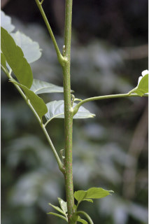
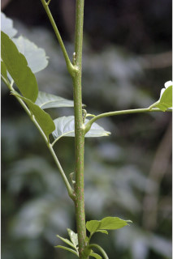
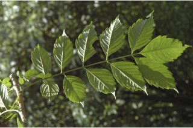
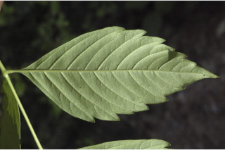
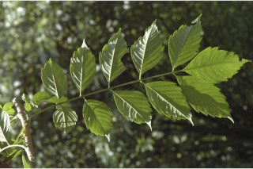
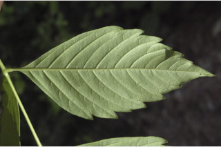
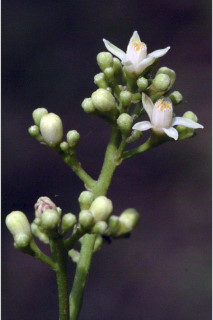
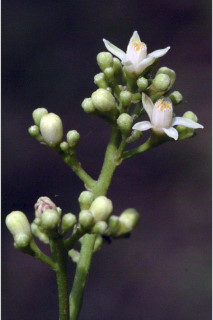

Shrubs or small trees, up to 5 m tall.
ಪೊದೆಗಳು ಅಥವಾ 5 ಮೀ. ಎತ್ತರ ಬೆಳೆಯುವ ಸಣ್ಣ ಮರಗಳು.
Shrubs or small trees, up to 5 m tall.
பெரிய குத்துச்செடி முதல் சிறிய மரம் 5 மீ. உயரம் வரை வளரக்கூடியது.
Young branchlets terete, lenticellate, pubescent.
ಎಳೆಯ ಕಿರುಕೊಂಬೆಗಳು ದುಂಡಾಗಿದ್ದು,ಸೂಕ್ಷ್ಮ ಬೆಂಡು ರಂಧ್ರಗಳ ಸಮೇತವಿದ್ದು ದಟ್ಟ ಮೃದು ತುಪ್ಪಳದಿಂದ ಕೂಡಿರುತ್ತವೆ.
Young branchlets terete, lenticellate, pubescent.
சிறியநுனிக்கிளைகள் குறுக்குவெட்டுத் தோற்றத்தில் வளையமானது, பட்டைத்துளைகள் (லெண்டிசெல்லேட்) உடையது, உரோமங்களுடையது.
Leaves compound, imparipinnate, 10-28 cm long, alternate, spiral, often crowded at twig ends, pulvinate; rachis 4-12.5 cm, terete, pubescent; petiolule 0.1-0.3 cm long and the terminal one little longer; leaflets opposite or subopposite, 4-5 pairs sometimes 6 pairs with one at terminal, 2-10 x 1.3-4.5 cm, elliptic, apex acute to acuminate, base acute, cuneate or attenuate, margin entire at base and coarsely serrate towards apex, chartaceous, pubescent beneath at least on nerves; midrib thinly raised above; secondary_nerves 5-9 pairs; tertiary_nerves broadly reticulate.
ಎಲೆಗಳು ಸಂಯುಕ್ತ ಮಾದರಿಯವು, ಅಸಮಸಂಖ್ಯಾ ಗರಿ ರೂಪಿಗಳಾಗಿದ್ದು 10 ರಿಂದ 28 ಸೆಂ.ಮೀ.ಉದ್ದ ಹೊಂದಿದ್ದು ಪರ್ಯಾಯ ಮತ್ತು ಸುತ್ತು ಜೋಡನಾ ವ್ಯವಸ್ಥೆಯಲ್ಲಿದ್ದು ಹೆಚ್ಚಿನ ಸಂಧರ್ಭದಲ್ಲಿ ಕಿರುಕೊಂಬೆಗಳ ತುದಿಯಲ್ಲಿ ಗುಂಪಾಗಿರುತ್ತವೆ ಹಾಗೂ ಉಬ್ಬಿದ ಎಲೆ ಬುಡವನ್ನು ಹೊಂದಿರುತ್ತವೆ;ಸಂಯುಕ್ತ ಪರ್ಣದ ನಡುದಿಂಡು 4-12.5 ಸೆಂ ಮೀ. ಉದ್ದವಿದ್ದು ದುಂಡಾಗಿದ್ದು ದಟ್ಟ ಮೃದು ತುಪ್ಪಳದಿಂದ ಕೂಡಿರುತ್ತದೆ; ಕಿರುತೊಟ್ಟು0.1 ರಿಂದ 0.3 ಸೆಂ.ಮೀ. ಉದ್ದವಿರುತ್ತವೆ; ಕಿರುಪತ್ರಗಳು ಅಭಿಮುಖಿ ಅಥವಾ ಉಪ-ಅಭಿಮುಖಿಗಳಾಗಿರುತ್ತವೆ,ಸಾಮಾನ್ಯವಾಗಿ ತುದಿಯಲ್ಲಿ ಒಂದು ಕಿರುಪತ್ರದ ಸಮೇತವಾಗಿ 4-5 ಜೋಡಿಗಳಿರುತ್ತವೆ ಕೆಲವು ವೇಳೆ 6 ಜೋಡಿಗಳಿರುತ್ತವೆ,ಗಾತ್ರ 2-10 X 1.3 – 4.5 ಸೆಂ.ಮೀ.ಇದ್ದು ಅಂಡವೃತ್ತದ ಆಕಾರ ಹೊಂದಿದ್ದು,ಚೂಪಾದುದರಿಂದ ಕ್ರಮೇಣವಾಗಿ ಚೂಪಾಗುವ ತುದಿ,ಬೆಣೆಯಾಕಾರದ ಅಥವಾ ಒಳಬಾಗಿದ ಬುಡ ಹೊಂದಿರುತ್ತವೆ;ಅಂಚು ಬುಡಬಾಗದಲ್ಲಿ ನಯವಾಗಿದ್ದು ತುದಿಯತ್ತ ಸರಿದಂತೆ ಒರಟಾದ ಗರಗಸ ದಂತಗಳ ಸಮೇತವಿರುತ್ತದೆ, ಮೇಲ್ಮೈ ಕಾಗದವನ್ನೋಲುವ ರೀತಿಯಿರುತ್ತದೆ, ಪತ್ರದ ತಳಭಾಗದಲ್ಲಿ ಕನಿಷ್ಠ ಪಕ್ಷ ನಾಳಗಳ ಮೇಲಾದರೂ ದಟ್ಟ ಮೃದು ತುಪ್ಪಳವಿರುತ್ತದೆ;ಮಧ್ಯನಾಳ ಪತ್ರದ ಮೇಲ್ಭಾಗದಲ್ಲಿ ತೆಳುವಾಗಿ ಮೇಲೆದ್ದಿರುತ್ತದೆ; ಎರಡನೇ ದರ್ಜೆಯ ನಾಳಗಳು 5 ರಿಂದ 9 ಜೋಡಿಗಳು; ಮೂರನೇ ದರ್ಜೆಯ ನಾಳಗಳು ವಿಶಾಲ ಜಾಲಬಂಧ ನಾಳವಿನ್ಯಾಸ ಹೊಂದಿರುತ್ತವೆ.
Leaves compound, imparipinnate, 10-28 cm long, alternate, spiral, often crowded at twig ends, pulvinate; rachis 4-12.5 cm, terete, pubescent; petiolule 0.1-0.3 cm long and the terminal one little longer; leaflets opposite or subopposite, 4-5 pairs sometimes 6 pairs with one at terminal, 2-10 x 1.3-4.5 cm, elliptic, apex acute to acuminate, base acute, cuneate or attenuate, margin entire at base and coarsely serrate towards apex, chartaceous, pubescent beneath at least on nerves; midrib thinly raised above; secondary_nerves 5-9 pairs; tertiary_nerves broadly reticulate.
கூட்டிலை, ஒற்றைபடை சிறகு வடிவக்கூட்டிலைகள், 10-28 செ.மீ. நீளமானது, மாற்றுஅடுக்கமானவை, சுழல் போல் அமைந்தது, சிறுகிளைகளின் நுனியில் இலைகள் கூட்டமாக மற்றும் நெருக்கமாக காணப்படும், பல்வினேட்; மத்தியகாம்பு 4-12.5 செ.மீ., குறுக்குவெட்டுத் தோற்றத்தில் வளையமானது, உரோமங்களுடையது; சிற்றிலைக்காம்பு 0.1-0.3 செ.மீ. நீளமானது மற்றும்கூட்டிலையின் நுனியுள்ள சிற்றிலையின் காம்பு நீளமானது சிற்றிலைகள் எதிராக அமைந்தவை அல்லது கிட்டத்தட்ட எதிராக அமைந்தவை, 4-5 ஜோடிகள் சிலசமயங்களில் 6 ஜோடிகள் நுனியில் ஒர் சிற்றிலை மட்டும் உடையது, 2-10 X 1.3-4.5 செ.மீ., நீள்வட்ட வடிவானது, அலகின் நுனி கூரியது முதல் அதிக்கூரியது, அலகின் தளம் கூரியது, ஆப்பு வடிவானது அல்லது அட்டனுவேட், அலகின் விளிம்பு தளத்தில் முழுமையானது மற்றும் நுனியில் பற்களுடையது, சார்ட்டேசியஸ், கீழ்பரப்புநரம்பில் உரோமங்களுடையது ; மையநரம்பு மேற்புறத்தில் அலகின் பரப்பைவிட சிறிது உயர்ந்து இருக்கும்; இரண்டாம் நிலை நரம்புகள் 5-9 ஜோடிகள்; மூன்றாம் நிலை நரம்புகள் அகன்ற வலைப்பின்னல் போன்றவை.
Inflorescence axillary panicles; flowers white.
ಪುಷ್ಪಮಂಜರಿಗಳು ಅಕ್ಷಾಕಂಕುಳಿನಲ್ಲಿದ್ದು ಪುನರಾವೃತ್ತಿಯಾಗಿ ಕವಲೊಡೆಯುವ ಮಾದರಿಯವು; ಹೂಗಳು ಬಿಳಿ ಬಣ್ಣ.
Inflorescence axillary panicles; flowers white.
மஞ்சரி தண்டின் இலைக்கோணங்களில் காணப்படும் பேனிக்கிள்; மலர்கள் வெள்ளை நிறமானது.
Drupe, globose, 0.7 cm across, with 5 pyrenes; seeds 1-2 per pyrene.
ಡ್ರೂಪ್ಗಳು ಗೋಳಾಕಾರವಾಗಿದ್ದು 0.7 ಸೆಂ.ಮೀ. ಅಡ್ಡಗಲತೆಯನ್ನು ಹೊಂದಿದ್ದು 5-pyrene ಸಮೇತವಿರುತ್ತವೆ; ಪ್ರತಿ ಪೈರೀನ್ ನಲ್ಲಿ1-2 ಬೀಜಗಳು ಇರುತ್ತವೆ.
Drupe, globose, 0.7 cm across, with 5 pyrenes; seeds 1-2 per pyrene.
உள்ளோட்டுத்தசைகனி (ட்ரூப்), கோளவடிவானது, 0.7 செ.மீ. குறுக்களவுடையது, 5 பைரின் உடையது; ஒர் பைரின் 1-2 விதைகளுடையது.
 

 




 
